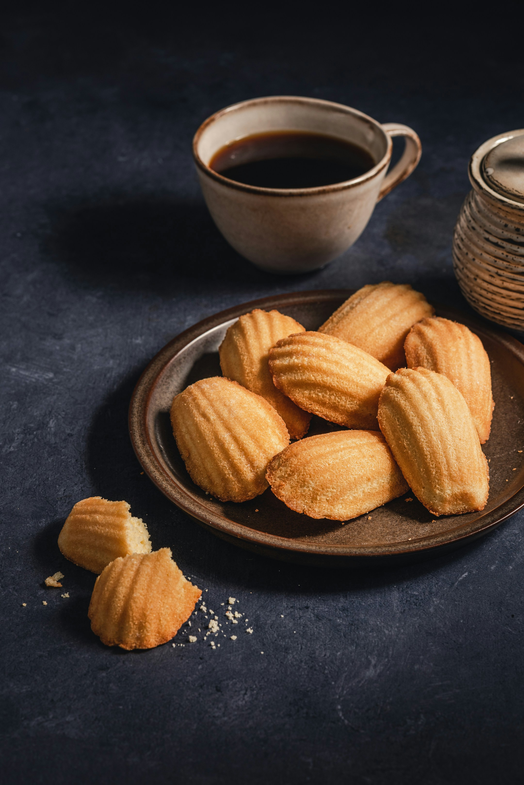

The Best & Easiest Madeleines Recipe
Also known as French butter cakes, madeleines are well-known, easily-recognizable, sophisticated little cakes. They have a reputation for being fussy, and what they’re really known for is their scalloped shell-shape and their characteristic bump.
Ingredients
For Coating:
- 1 Tablespoon unsalted butter
- 1 ½ teaspoons all-purpose flour
For Madeleines:
- 10 Tablespoons (141 g) unsalted butter cut into pieces
- 2 large eggs room temperature
- ½ cup (100 g) granulated sugar
- 3 Tablespoons light brown sugar firmly packed
- 2 teaspoons vanilla extract
- ⅛ teaspoon salt
- 1 ¼ cup (155 g) all-purpose flour
- 2 teaspoons lemon or orange zest optional
Instructions
- Preheat oven to 375°F (190°C) and whisk together 1 Tablespoon melted butter and 1 ½ teaspoons flour. Use a pastry brush to lightly but thoroughly grease every cavity of your madeleine pan. Set aside.
- In a small heatproof bowl, melt remaining 10 Tablespoons of butter. Set aside to cool. 10 Tablespoons unsalted butter.
- In a large bowl, combine eggs, sugars, vanilla extract, and salt. Whisk vigorously until thoroughly combined (about 30 seconds). 2 large eggs, ½ cup granulated sugar, 3 Tablespoons light brown sugar, 2 teaspoons vanilla extract,⅛ teaspoon salt
- Sift flour into the egg mixture, about ⅓ of the flour at a time, gently stirring into egg mixture after each addition. 1 ¼ cup all-purpose flour
- Drizzle cooled melted butter around the edge of the batter and add zest, if using. Gently fold into batter using a spatula until ingredients are thoroughly combined (but do not over-mix). 2 teaspoons lemon or orange zest
- Drop batter by heaping Tablespoon into prepared pan.
- If your madeleine pan did not hold all of the batter, allow the pan to cool before re-brushing with butter/flour mixture and refilling with batter and baking your next batch.
- If desired, sprinkle madeleines with additional powdered sugar or dip in melted chocolate before serving.